01 / 06 · Architecture · demo deck
The Planet Express Standard
Futurama as a documentation standard: Galaxy, Ship, Package. A dark blueprint theme: cyan for the galaxy, green for the ship, amber for the package.
Open the deck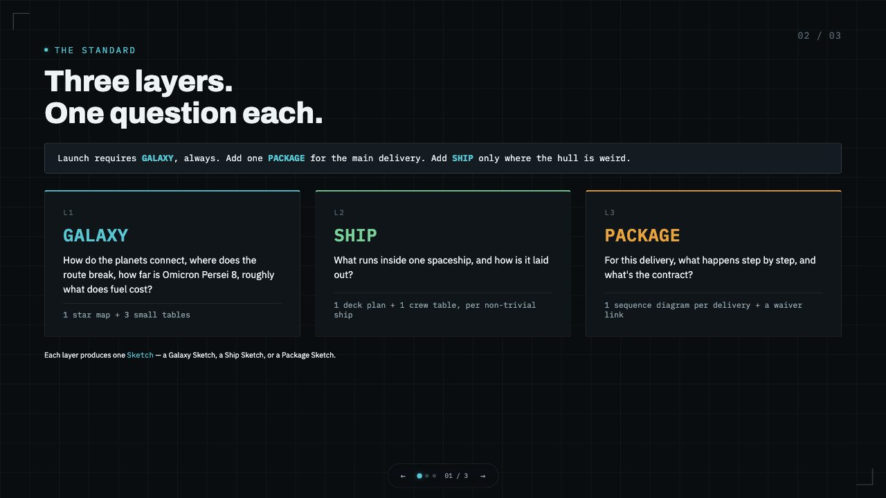
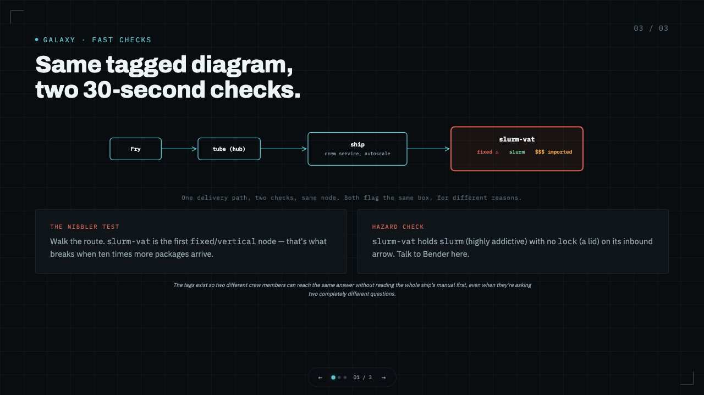
02 / 06 · Operations · demo deck
Starship Vision
Star Trek: one warp core for four decks. A navy stage, condensed capitals, cyan highlights, and red for what breaks.
Open the deck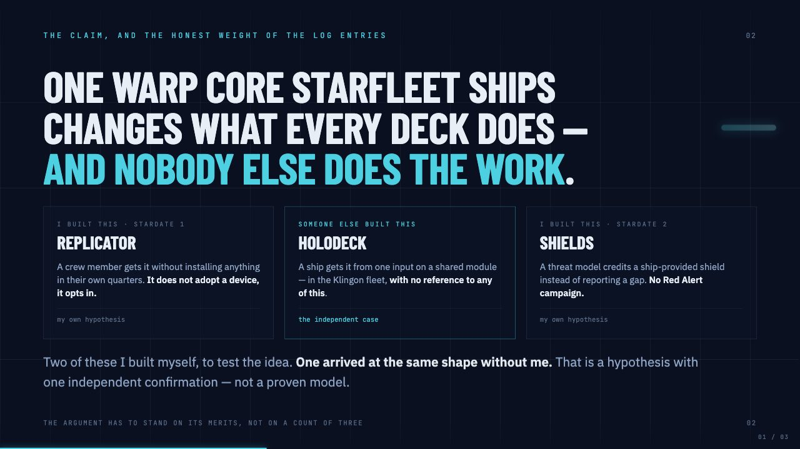
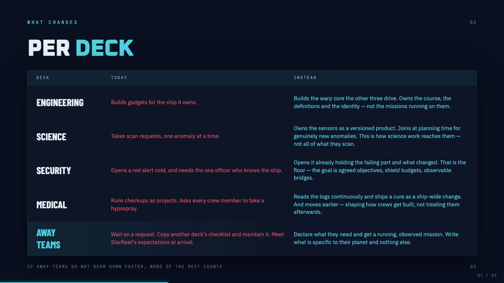
03 / 06 · Release · demo deck
Pawnee
Parks and Recreation: one signal for what is open, across every park. An indigo glow, an amber signal light, and timelines as the main diagram.
Open the deck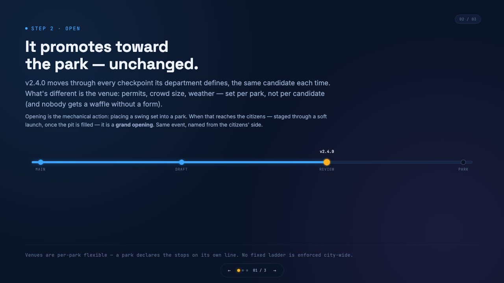
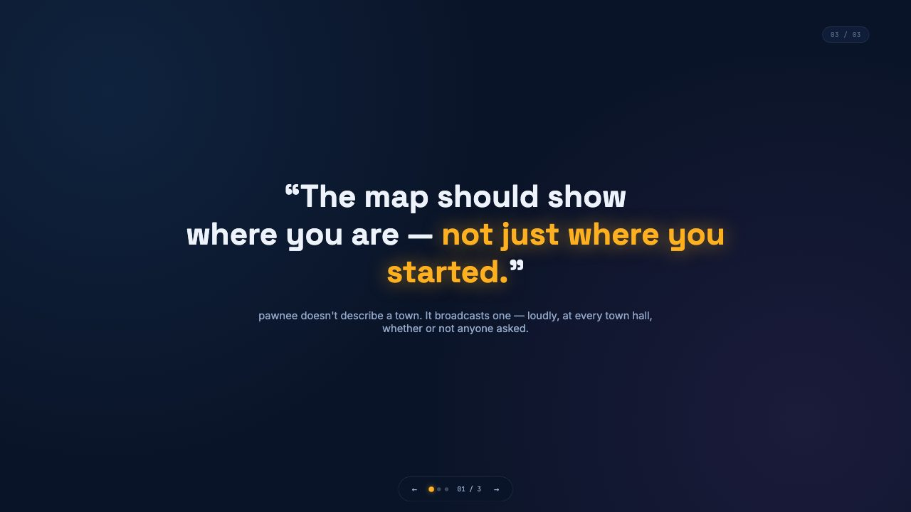
04 / 06 · Automation · demo deck
The Dundie Loop
The Office: automation teams opt into, not a tax they carry. A near-black stage, one lime accent, and a glow that follows the story.
Open the deck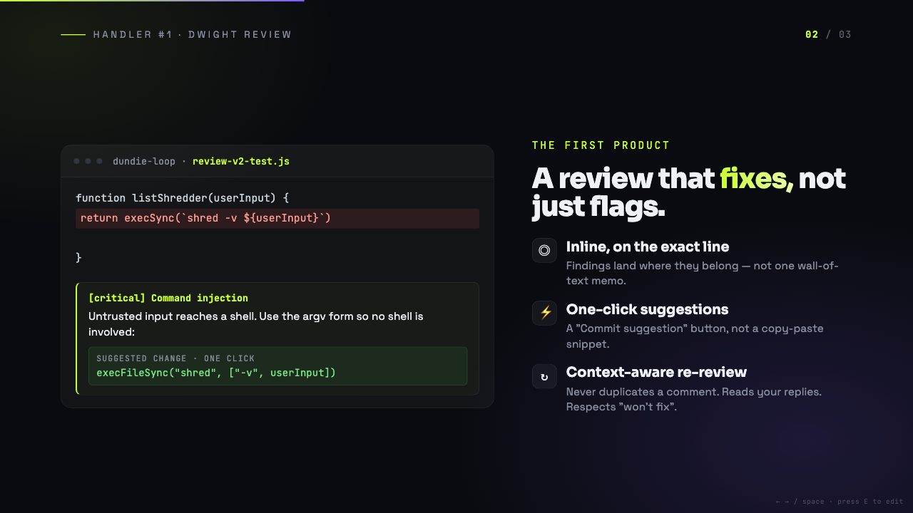
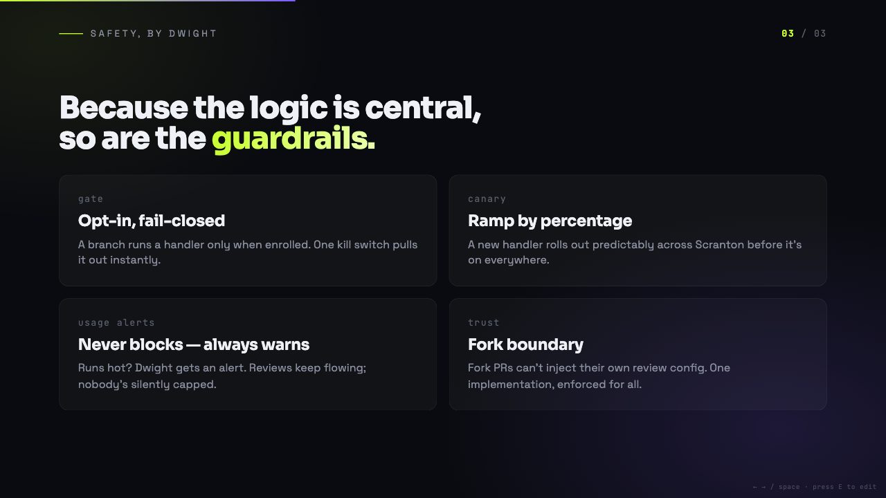
05 / 06 · Guide · demo deck
One towel. One galaxy.
The Hitchhiker's Guide: a two-part case for travelling together. Cream and near-black halves, orange numerals, and an italic serif for the turn in each headline.
Open the deck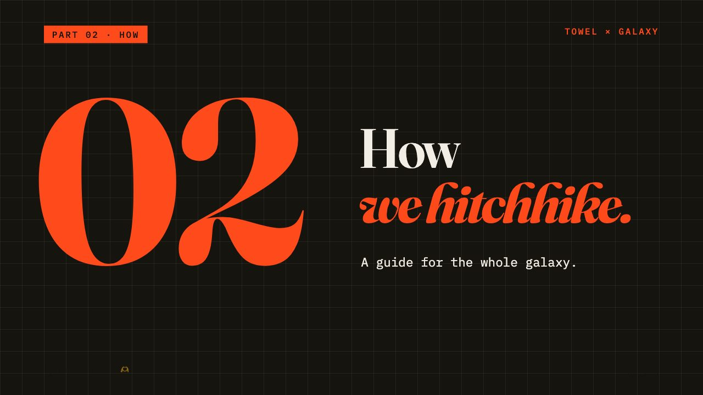
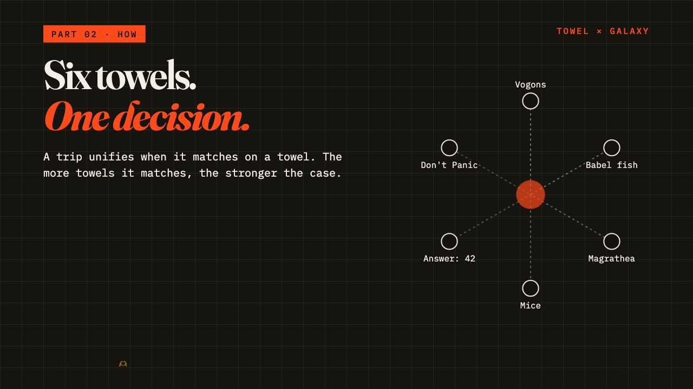
06 / 06 · Workshop · demo deck
Central Perk
Friends: a workshop deck for a coffee shop and two apartments. Warm paper, blue ink, coral for what to look at, and diagrams in blue line work.
Open the deck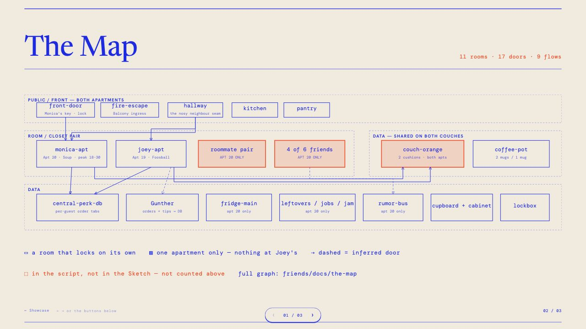
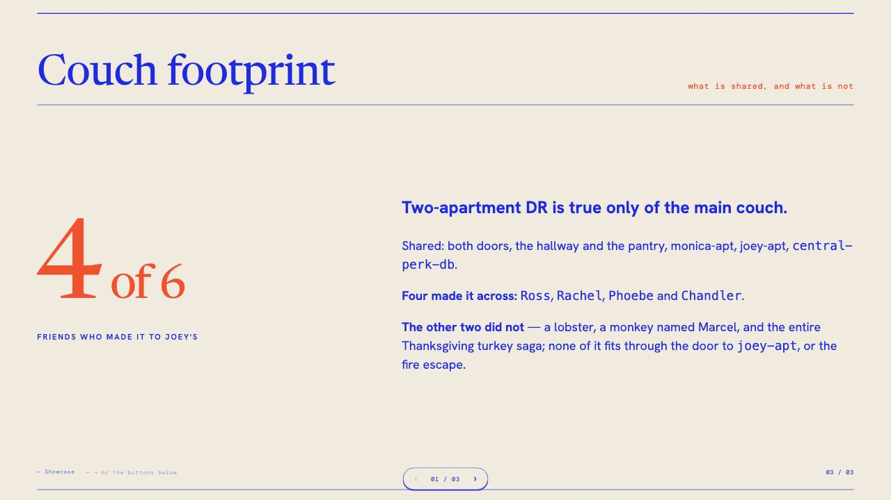